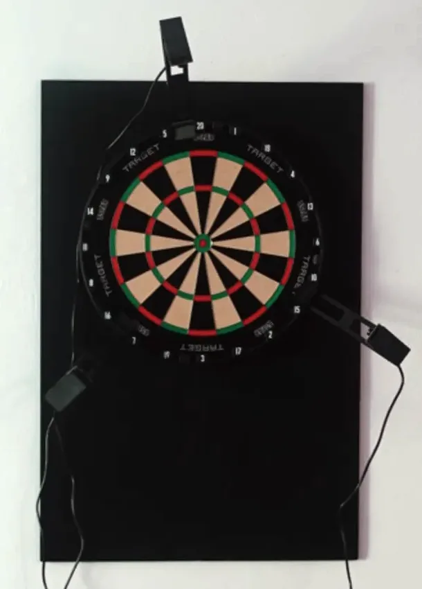
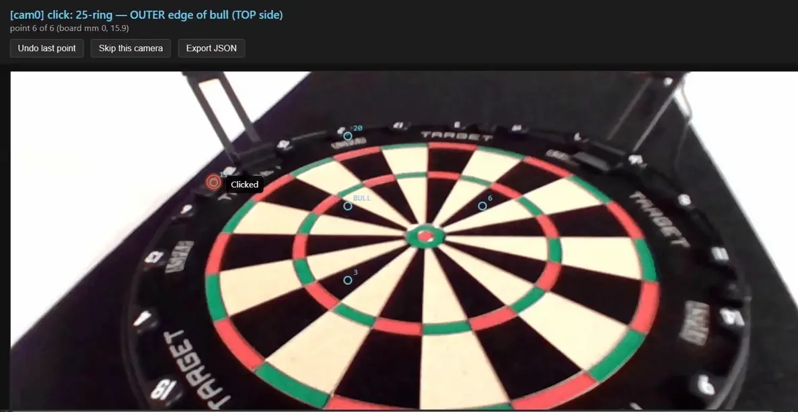

What's on the bench
The rig splits cleanly into two halves that I could build and test separately: the vision that turns three camera frames into a hit location, and the scoreboard that turns hit locations into a match. They only ever meet through one small message type, which is why the scoreboard already works without a single real camera attached.
/dev/v4l/by-path, exposure & white-balance locked manualdartpiRPi OS Lite 64-bit; OpenCV + V4L2; the detection server runs as a systemd service with a tuning UI on the LANpytest (8 modules)
Finding the dart
The pipeline goes from raw frames to one coordinate in millimetres from the bullseye:
- capture 3 views
- per-camera homography
- detect the tip
- fuse / triangulate
- (x, y) in mm
- score the segment
Each camera is calibrated in two steps: a checkerboard pass for its
intrinsics, then a homography that maps its view onto the board plane. A
dart is found by frame differencing — the server watches for the
spike a thrown dart makes and waits for the frame to settle — but only
inside the board region: every pixel is projected through the homography,
and anything past ~180 mm (the rim, the background, a reaching hand)
is masked out. The per-camera detections become one point in millimetres,
and coordToSegment turns that into a score — the single
authority both the hardware and the simulator defer to.
On the Pi, a browser tuning UI shows the guess plus the tip it found in
each camera; I confirm or correct it, every confirmation is logged as
labelled data, and the scored dart is folded into the background so the
next throw is detected incrementally. The pipeline carries eight
pytest modules — board, camera_config, detect, fusion,
homography, labels, pipeline and triangulate.

| What I measured | Result | What it means |
|---|---|---|
| Per-camera calibration reprojection error | 0.29 – 0.86 mm | The three homographies land sub-millimetre, so the board-plane mapping is good enough to trust for scoring. |
| End-to-end hit-location error on real throws | not yet measured | Needs the camera → score loop closed — this is the number that actually decides whether it can score a real match. |
Keeping the match
The scoreboard is deliberately boring in one direction only: feed → events → reducer → state → render. The UI never mutates match state, so undo is just "drop the last dart and replay," and the whole match is a log I can replay from the start.
- The seam is one message type. Everything upstream — a real camera or the simulator — converts into the same event, so nothing downstream knows or cares which produced the hit. That's why I could finish and test the scoreboard before the rig existed.
- The checkout is computed, not tabulated. The finish-path solver works out how to end a leg instead of shipping a 170-row lookup table — and the simulator aims with the same solver, so the suggested finish and the sim can't drift apart.
- 501 rules are pure. Bust, double-out, legs and sets are plain functions with no framework in them — easy to test, easy to reason about.
- The simulator throws with realistic scatter. Three skill levels apply 9 / 15 / 26 mm of Gaussian spread, which is what stands in for the camera feed today.
The last mile
Everything is staged for one integration and no more: the rig-to-scoreboard
adapter (wsFeed) is still a stub. The job is to normalise the
rig's WebSocket frames into the one event type the scoreboard already
speaks, then run a single real dart from board to screen. After that:
- A mobile / TV layout — the scoreboard was built laptop-first.
- Game modes beyond 501 — the rules are shaped so these are new files, not a rewrite.
Where it is. Both halves work and are unit-tested; the camera-to-score loop has not yet run as one system.
Build log
I didn't keep a dated commit log on this one. Where it stands as of 14 Sep 2026: the three cameras are calibrated (sub-millimetre reprojection error), the Pi is recording and labelling real throws through the tuning UI, and the scoreboard runs on the simulator feed. The missing piece is the adapter that turns those recorded detections into live scoreboard events.